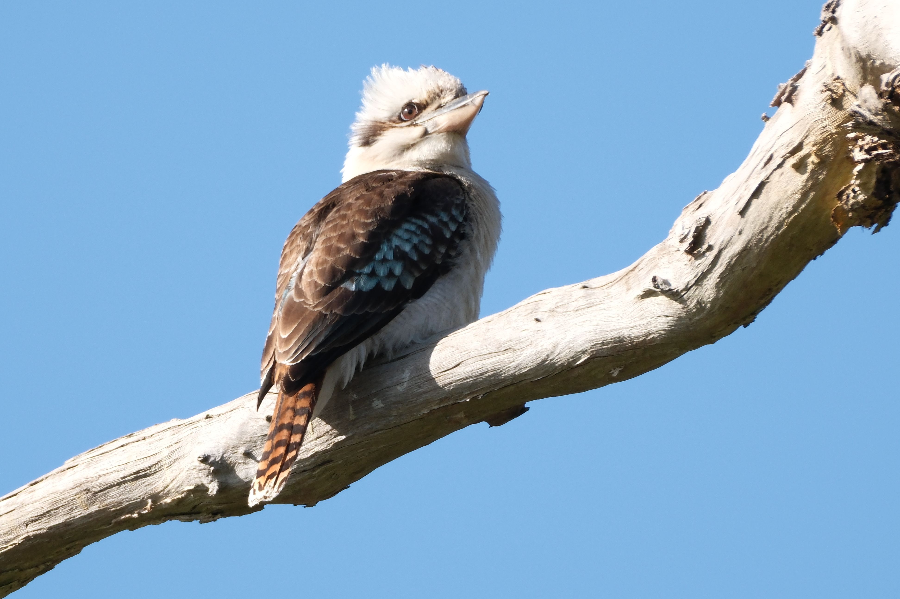

The Laughing Kookaburra is one of Australia's most recognisable birds, famous for its loud call that sounds remarkably like human laughter. It is a large member of the kingfisher family, with a large pale bill, brown-and-white body, blue-green wings and a rufous tail. Despite belonging to the kingfisher family, it does not depend primarily on fish. Instead, it sits quietly on a perch and watches for prey before dropping down to seize it. Its diet can include insects, reptiles, amphibians, rodents and other small animals. Unlike many solitary kingfishers, Laughing Kookaburras live in family groups and may have older offspring helping the breeding pair raise young.